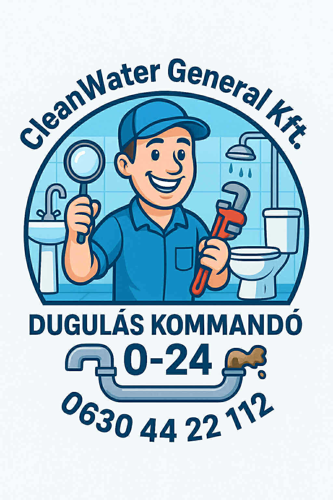

Rólunk
A Cleanwater General Kft. több mint 10 éves tapasztalattal rendelkezik a duguláselhárítás és a csatornatisztítás területén Budapesten és környékén. Mi, a Cleanwater General Kft. csapata, arra törekszünk, hogy gyors, megbízható és tartós megoldásokat kínáljunk mindenféle vízvezeték- és csatornaproblémára. A szakértelmünk és a professzionális technológiáink garantálják, hogy a dugulásokat hatékonyan elhárítjuk, legyen szó akár egy apró mosogató dugulásáról, akár egy komolyabb csatorna dugulás megszüntetéséről.
A duguláselhárítás Budapesten nem mindig egyszerű feladat, de mi azért vagyunk itt, hogy biztosítsuk Önnek a legjobb szolgáltatást, akár éjjel-nappal. A szolgáltatásaink között szerepelnek a legmodernebb eszközök és eljárások, mint például a magasnyomású vízsugaras tisztítás, a kamerás csatornavizsgálat, és a hagyományos duguláselhárító gépek használata. Ezen kívül a vízvezeték-szerelés és kiváló csatornatisztító szolgáltatások szintén fontos részei a portfóliónknak.
A legfontosabb számunkra az ügyfelek elégedettsége és a problémák gyors, szakszerű megoldása. Cégünk elkötelezett amellett, hogy minden feladatot a lehető leggyorsabban végezzünk el, minimalizálva a kellemetlenségeket az Ön otthonában. A duguláselhárítás nem csupán egy technikai feladat számunkra, hanem lehetőség arra, hogy segíthessünk ügyfeleinknek a mindennapi életük gördülékenyebbé tételében.
Miért válasszon minket a duguláselhárításhoz? Elsősorban a tapasztalatunk és szakértelmünk miatt. A duguláselhárítás Budapest területén változatos kihívások elé állít minket, hiszen minden ingatlan más és más csatornarendszerrel rendelkezik, de mi minden típusú dugulással megküzdünk. Munkánk során arra törekszünk, hogy ne csupán átmeneti megoldásokat kínáljunk, hanem hosszú távú eredményeket érjünk el.
Az évek során számos sikeres projektet hajtottunk végre, beleértve a csatornatisztítást, konyhai dugulások elhárítását, WC duguláselhárítást, és a bonyolultabb csőtörések javítását. Minden munkálatot a legnagyobb körültekintéssel végzünk, és biztosítjuk, hogy ne csak gyorsan, hanem tisztán és biztonságosan végezzük el a feladatokat.
A csatornatisztítás nem csak duguláselhárítást jelent, hanem annak megelőzését is. Cégünk fontosnak tartja a prevenciót, ezért szolgáltatásaink között szerepel a rendszeres karbantartás, amely segít elkerülni a jövőbeni problémákat, mint a rendszeres dugulások és csőtörések. Miután elvégeztük a csatornatisztítást, ügyfeleink mindig azt tapasztalják, hogy a vízvezetékek és csatornák ismét tökéletes állapotban működnek.
Munkánk során a legmodernebb eszközöket használjuk, így biztosítva, hogy a duguláselhárítás során nem csak gyors, hanem hatékony megoldásokat kínáljunk. A csatornavizsgálatok és a vízsugaras tisztítás mind hozzájárulnak ahhoz, hogy a lehető legkevesebb kárt okozzuk az ingatlanban, és a dugulásokat gyorsan és tartósan megszüntessük.
Amennyiben Önnek is problémái vannak a dugulással vagy bármilyen vízvezeték-szerelési kérdése van, ne habozzon kapcsolatba lépni velünk! A Cleanwater General Kft. csapata a legjobban felkészített szakemberekkel áll rendelkezésére, akik mindent megtesznek azért, hogy a lehető legjobb megoldást kínálják Önnek. Mi biztosítjuk, hogy a dugulás ne okozzon több gondot a mindennapi életében!

Duguláselhárítás
Gyors és szakszerű duguláselhárítás lakossági és ipari ügyfeleknek.

Vízvezeték szerelés
Csapok, csövek, vízórák szakszerű javítása és cseréje duguláselhárítás közben is.

WC és mosogató javítás
Minden vízvezeték-problémát gyorsan megoldunk – ha kell, duguláselhárítással együtt.

Csatorna tisztítás
Teljes csatornarendszer tisztítása, karbantartása és duguláselhárítása.

Vízóra csere
Vízóra cseréje és hitelesítése – szükség esetén duguláselhárítással kombinálva.

Csőgörényezés
Professzionális csőgörényezés, ami a duguláselhárítás egyik leghatékonyabb módszere.

Kamerás vizsgálat
Csatornák belső állapotának ellenőrzése – gyakran duguláselhárítás előtt.

Egyéb vízszerelési munkák
Minden egyéb vízszerelési feladat, ahol a duguláselhárítás is szerepet kaphat.